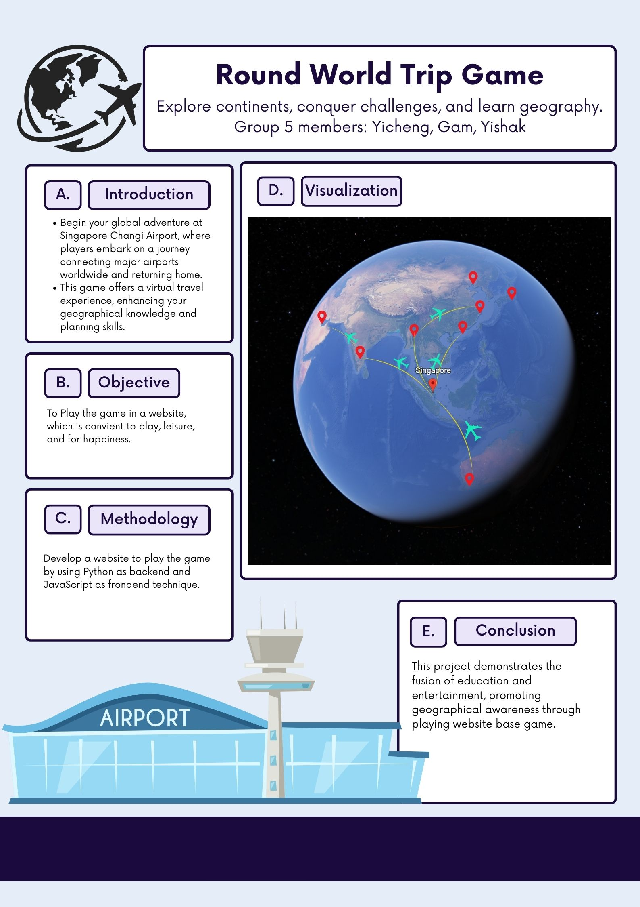

About Round World Trip Game
Welcome to the Round World Trip Game, an exciting and educational journey that allows players to construct their own flight routes across the globe. Starting and ending at the Singapore Changi Airport, players navigate through real-world airports while facing challenges that test their planning and decision-making skills.
Game Overview
- Start your journey at Singapore Changi Airport.
- Choose your next destination wisely within a 5,000 km limit.
- Plan your routes while considering real-time weather updates.
- Return to Singapore to complete the round-the-world trip.
- Compete to achieve the shortest total distance and secure your spot on the leaderboard!
Key Functionalities
- Airport Selection: Choose a destination within 5,000 km for strategic gameplay.
- Real-Time Weather: Avoid bad weather and reroute if necessary.
- Dynamic Challenges: Handle unexpected weather conditions during your journey.
- Replayability: Track your scores and improve with every attempt.
Quality Standards
- Performance: Quick loading times for seamless gameplay.
- Usability: Clear instructions and instant feedback for a better user experience.
- Accuracy: Realistic weather data from reliable sources like OpenWeather API.
- Stability: Robust handling of API and database requests without interruptions.
Our Vision
Our goal is to provide players with a fun, strategic, and realistic simulation of global travel. Test your planning abilities, explore the world, and compete for the top rank in this thrilling adventure!
